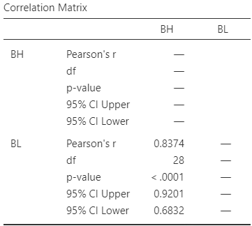
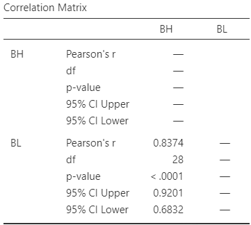

33 Correlation and regression: CIs and tests
So far, you have learnt about the research process, including analysing data using confidence intervals and conducting hypothesis tests. In this chapter, you will learn to:
- produce confidence intervals for correlation coefficients.
- conduct hypothesis tests for correlation coefficients.
- produce and interpret linear regression equations.
- conduct hypothesis tests for the slope of a regression line.
- produce confidence intervals for the slope of a regression line.
- determine whether the conditions for using these methods apply in a given situation.
33.1 Introduction: sorghum yield and borers
So far, RQs about single variables (descriptive RQs) and RQs for comparisons (relational and repeated-measures RQs) have been studied. In this chapter, the relationship between two quantitative variables is studied (correlational RQs) when that relationship is approximately linear. The strength of the relationship (correlation) and the nature of that relationship (regression) are discussed.
For this chapter, consider this (one-tailed) RQ:
In sorghum crops (AG1090 hybrid) in Brazil, is a larger sugarcane borer infestation associated with smaller yields?
C. da S. F. Souza et al. (2024) recorded the borer infestation in sorghum crops, for \(n = 24\) crops over three years (C. Souza et al. 2024), shown in Fig. 33.1. The data comprises two quantitative variables (Fig. 33.2, left panel).
FIGURE 33.1: The sorghum-yield data.
Knowing the amount of infestation provides some information about the yield: a moderate relationship between the variables seems evident. The relationship also seems somewhat linear. The Pearson correlation coefficient (Fig. 33.2, right panel) is \(r = -0.934\), so \(R^2 = (-0.934)^2 = 87.2\)%. This means that the unexplained variation in yield reduces by \(78.8\)% by knowing the amount of infestation.
Recall that the sample correlation coefficient is denoted by \(r\), and the population correlation coefficient is denoted by \(\rho\).
FIGURE 33.2: Sorghum yield against borer infestation. Left: scatterplot. Right: correlation output.
33.2 Correlation: CIs and tests for \(\rho\)
33.2.1 Correlation: CIs for \(\rho\)
The sorghum data in Fig. 33.1 is only one of the countless possible samples of sorghum crops that could have been studied. The value of \(r\) (an estimate of \(\rho\), the parameter) will vary from sample to sample; that is, the value of \(r\) has a sampling distribution, and sampling variation exists. The sampling distribution of \(r\), however, does not have a normal distribution, so CIs for \(\rho\) will be taken directly from software output (Fig. 33.2, right panel). For the sorghum data, the \(95\)% CI for \(\rho\) is from \(-0.971\) to \(-0.851\). This CI is not symmetrical: the value of \(r\) is not halfway between these limits. We write:
For soghum crops, the correlation coefficient between yield and infestation percentage is \(-0.934\), with a \(95\)% CI from \(-0.971\) to \(-0.851\) (\(n = 24\)).
In other words, a population with a correlation coefficient \(\rho\) between \(-0.971\) and \(-0.851\) could reasonably have produced a sample correlation coefficient of \(r = -0.934\) from a sample of size \(n = 24\).
Example 33.1 (Correlation) The relationship between the number of cyclones \(y\) in the Australian region each year from 1969 to 2005, and a unitless climatological index called the Ocean Niño Index (ONI, \(x\)), averaged over October, November and December, is shown in Fig. 33.3 (left panel) (P. K. Dunn and Smyth 2018).
The relationship has a negative direction, so the value of \(r\) is negative. From the software output, \(r = -0.683\) with a \(95\)% CI from \(-0.824\) to \(-0.460\).

FIGURE 33.3: The number of cyclones in the Australian region each year from 1969 to 2005, and the ONI averaged over October, November, December. Left: scatterplot. Right: software output.
33.2.2 Correlation: hypothesis test for \(\rho\)
A hypothesis test can also be conducted regarding \(\rho\), the Pearson correlation coefficient in the population. The null hypothesis is, as always, the 'no difference, no change, no relationship' position which is, in this context:
- \(H_0\): \(\rho = 0\).
Clearly, the sample correlation coefficient \(r\) for the data is not zero, and the RQ is effectively asking if sampling variation is the reason for this discrepancy between \(r\) and the parameter \(\rho\).
Since the RQ (in Sect. 33.1) is one-tailed (negative direction), the alternative hypothesis is:
- \(H_1\): \(\rho < 0\) (one-tailed test, based on the RQ).
As usual, initially assume that \(\rho = 0\) (from \(H_0\)), then describe what values of \(r\) could be expected using the sampling distribution, under that assumption, across all possible samples. Then the observed value of \(r\) is compared to the values expected through sampling variation to determine if the value of \(r\) supports or contradicts the assumption.
For a correlation coefficient, the sampling distribution of \(r\) does not have a normal distribution.8 However, the output (Fig. 33.2, right panel) contains the relevant two-tailed \(P\)-value for the test: less than \(0.001\). Hence, the one-tailed \(P\)-value for the test is less than \(0.0005\). Very strong evidence exists to support \(H_1\) (that the correlation in the population is negative).
We write:
The sample presents very strong evidence (one-tailed \(P < 0.0005\)) that the sorghum yield has a negative association with borer infestation percentage (\(r = -0.934\) with \(95\)% CI from \(-0.971\) to \(-0.851\); \(n = 24\)) in the population.
Notice the three features of writing conclusions again: an answer to the RQ, evidence to support the conclusion, and some sample summary information.
If the evidence suggests that the correlation coefficient is not zero (in the population), this does not necessarily mean a strong correlation exists. The correlation may be weak in the population (as estimated by the value of \(r\)), but evidence exists that the correlation is not zero in the population.
That is, the test is about statistical significance, not practical importance.
Example 33.2 (Correlation) The relationship between the number of cyclones \(y\) in the Australian region each year from 1969 to 2005, and the ONI \(x\) is shown in Fig. 33.3 (left panel). To test for a relationship, use \[ \text{$H_0$: $\rho = 0$} \qquad\text{ against}\qquad \text{$H_0$: $\rho \ne 0$}; \] software reports that \(P < 0.0001\) (Fig. 33.3, right panel). There is very strong evidence of a relationship between the number of cyclones in the Australian region and the ONI (averaged over October, November and December).
33.3 Regression
33.3.1 Introducting regression
Correlation measures the strength and direction of the linear relationship between two quantitative variables \(x\) (an explanatory variable) and \(y\) (a response variable). Sometimes, however, describing the nature of the relationship is useful. This is called regression.
The regression relationship is described mathematically using an equation, and allows us to:
- Predict the mean value of \(y\) from a given value of \(x\) (Sect. 33.3.4).
- Understand the relationship between \(x\) and \(y\) (Sect. 33.3.5).
An example of a linear regression equation, describing the linear relationship between the observed values of an explanatory variable \(x\) and the observed values of a response variable \(y\), is \[\begin{equation} \hat{y} = -4 + (2\times x), \qquad\text{usually written}\qquad \hat{y} = -4 + 2x. \tag{33.1} \end{equation}\] The notation \(\hat{y}\) refers to the mean of all the \(y\)-values that could be observed for some given value of \(x\). That is, for some value of \(x\), many different values of \(y\) could be observed, and \(\hat{y}\) is the value that regression equation predicts as the mean of all those possible values. This equation describes the connection between the values of \(x\) and the corresponding average values of \(y\).
\(y\) refers to the values of the response variable observed from individuals. \(\hat{y}\) refers to predicted mean value of \(y\) for given values of \(x\).
\(\hat{y}\) is pronounced as 'why-hat'; the 'caret' above the \(y\) is called a 'hat'.
More generally, the equation of a straight line is \[ \hat{y} = b_0 + (b_1 \times x), \qquad\text{usually written}\qquad \hat{y} = b_0 + b_1 x, \] where the values of \(b_0\) and \(b_1\) are unknown, and estimated from sample data. Notice that \(b_1\) is the number multiplied by \(x\). In Equation (33.1), \(b_0 = -4\) and \(b_1 = 2\).
Example 33.3 (Regression equations) A report on the growth of Australian children (Pfizer Australia 2008) found an approximate linear relationship between the age (in years) \(x\) and height (in cm) \(y\) of girls aged between four and seven. The regression equation was approximately \[ \hat{y} = 73 + 7x. \] The regression equation is the same if written as \[ \hat{y} = 7x + 73. \] In both cases, \(b_0 = 73\) and \(b_1 = 7\). This regression equation describes the connection between ages \(x\) and heights \(y\) for girls aged between four and seven.
33.3.2 Reviewing linear equations
To introduce, or revise, the idea of a linear equation, consider the (artificial) data in Fig. 33.4, with an explanatory variable \(x\) and a response variable \(y\). In the graph, a sensible line is drawn on the graph that seems to capture the relationship between \(x\) and \(y\). (You may have drawn a slightly different, but similar, line.) The line describes the predicted mean values of \(y\) (i.e., values of \(\hat{y}\)) for various values of \(x\). The relationship is positive and linear.
A regression equation specifies the line. In the regression equation \(\hat{y} = b_0 + b_1 x\), the numbers \(b_0\) and \(b_1\) are called regression coefficients, where
- \(b_0\) is the intercept (or the \(y\)-intercept), whose value corresponds to the predicted mean value of \(y\) when \(x = 0\).
- \(b_1\) is the slope, whose value measures how much the value of \(\hat{y}\) changes, on average, when the value of \(x\) increases by \(1\).
We will use software to find the values of \(b_0\) and \(b_1\) (as the formulas are tedious to use). However, a rough approximation of the values of \(b_0\) and \(b_1\) can be obtained using the rough straight line drawn on the scatterplot (Fig. 33.4).
A rough approximation of the value of the intercept \(b_0\) is the value of \(\hat{y}\) when \(x = 0\), from the drawn line. When \(x = 0\), the regression line suggests the value of \(\hat{y}\) is about \(2\) ; that is, the value of \(b_0\) is approximately \(2\).
A rough approximation of the slope \(b_1\) is found using
\[\begin{equation} \frac{\text{Change in $y$}}{\text{Corresponding INCREASE in $x$}} = \frac{\text{rise}}{\text{run}} \tag{33.2} \end{equation}\]
from the drawn line. This approximation of the slope is the change in the value of \(\hat{y}\) (the 'rise') divided by the corresponding increase in the value of \(x\) (the 'run').
FIGURE 33.4: An example scatterplot.
Consider what happens in the animation below when the value of \(x\) increases from \(1\) to \(5\) (a run of \(5 - 1 = 4\)). The corresponding value of \(y\) changes from about \(5\) to about \(17\), a rise of \(17 - 5 = 12\). So, using Equation (33.2), \[ \frac{\text{rise}}{\text{run}} = \frac{17 - 5}{5 - 1} = \frac{12}{4} = 3. \] The value of \(b_1\) is about \(3\). When using rise-over-run, better guesses for \(b_1\) are found when using one value of \(x\) near the left-side of the scatterplot, and another value of \(x\) near the right-side of the scatterplot, but any two values can be used (try using \(x = 0\) and \(x = 3\)).
Combing the rough guesses for \(b_0\) and \(b_1\), the regression line is approximately \(\hat{y} = 2 + (3\times x)\), usually written \[ \hat{y} = 2 + 3x. \]
The regression equation has \(\hat{y}\) (not \(y\)) on the left-hand side. That is, the equation predicts the mean values of \(y\), which may not be equal to any of the observed values (which are denoted by \(y\)).
A 'good' regression equation would produce predicted values \(\hat{y}\) close to the observed values \(y\); that is, the line passes close to each point on the scatterplot.
The intercept \(b_0\) has the same measurement units as the response variable. The measurement units for the slope \(b_1\) is the 'measurement units of the response variable', per 'measurement units of the explanatory variable'.
Example 33.4 (Measurement units of regression parameters) In Example 33.3, the regression line for the relationship between the age of Australian girls \(x\) (in years) and their height (in cm) \(y\) was \(\hat{y} = 73 + 7x\) (for girls aged between four and seven years).
In the equation, the intercept is \(b_0 = 73\,\text{cm}\) and the slope is \(b_1 = 73\,\text{cm}\)/y (the growth rate).
Example 33.5 (A rough approximation of the regression equation) For the sorghum data, a rough estimate of the regression line can be drawn on a scatterplot to estimate \(b_0\) and \(b_1\) (Fig. 33.5). The estimate of \(b_0\) (the value of \(\hat{y}\) when \(x = 0\)) is roughly \(4\,800\,\text{kg}.\text{ha}^{-1}\).
The estimate of \(b_1\) can be found using the rise-over-run idea. When \(x = 0\), the value of \(\hat{y}\) (according to the drawn line) is about \(4\,800\). At the other extreme of the plot, where \(x = 40\), the value of \(\hat{y}\) is about \(1\,000\). (Any two points on the line can be used, but using two points at each end gives better guesses of the slope.) So, as \(x\) increases from \(0\) to about \(40\), the value of \(\hat{y}\) reduces from about \(4\,800\) to about \(1\,000\), a change of about \(-3\,800\). That is, for a 'run' of \(40 - 0 = 40\), the 'rise' is \(4\,800 - 1\,000 = -3\,800\) (i.e., a drop of \(3\,800\)), and so a rough estimate of the slope is \(-3\,800/40 = -95\). (The relationship is negative, so the slope is negative.)
The rough guess of the regression line is therefore \[ \hat{y} = 4\,800 - 95x, \] where \(x\) is the infestation percentage, and \(y\) is yield (in \(\,\text{kg}.\text{ha}^{-1}\)). The rough guess of the intercept \(b_0\) is \(4\,800\,\text{kg}.\text{ha}^{-1}\), while the rough guess of the slope \(b_1\) is \(-95\,\text{kg}.\text{ha}^{-1}/\%\).
FIGURE 33.5: Obtaining rough guesses for the regression equation for the sorghum data. Left: approximating \(b_0\). Right: approximating \(b_1\) using rise-over-run. The plus signs on the right plot indicate the points used to estimate the slope.
You may like the following interactive activity, which explores slopes and intercepts.
Example 33.6 (Estimating regression parameters) The relationship between the number of cyclones \(y\) in the Australian region each year from 1969 to 2005, and the ONI \(x\) is shown in Fig. 33.3 (left panel).
To make a guess of the regression coefficients, a sensible line can be drawn through the data (Fig. 33.6). When the value of \(x\) is zero, the predicted value of \(y\) is about \(12\), so \(b_0\) is about \(12\) cyclones. Recall: the intercept is the predicted value of \(y\) when \(x = 0\), which is not at the left of the graph in Fig. 33.6.
To approximate the value of \(b_1\), use the rise-over-run idea. When \(x = -2\), the predicted mean value of \(y\) is about \(17\); when \(x = 2\), the predicted mean value of \(y\) is about \(8\). The value of \(x\) increases by \(2 - (-2) = 4\), while the value of \(\hat{y}\) changes by \(7.5 - 17 = -9.5\) (a decrease of about \(9.5\)). Hence, \(b_1\) is approximately \(-9.5/4 = -2.375\) cyclones per unit change in ONI. (You may get a slightly different value from a slightly different line.)
The relationship has a negative direction, so the slope must be negative. The regression line is approximately \(\hat{y} = 12 - 2.375x\).
FIGURE 33.6: The number of cyclones in the Australian region each year from 1969 to 2005, and the ONI averaged over October, November, December. An estimate of the reggression line is shown. The plus sign \({}+{}\) is located on the line where \(x = 0\). The crosses \({}\times{}\) are located to find rise-over-run.
The above method gives a crude approximation to the values of the intercept \(b_0\) and the slope \(b_1\). In practice, many reasonable lines could be drawn through a scatterplot of data, each giving slightly different rough guesses for \(b_0\) and \(b_1\). However, one of those lines is the 'best' line in some sense,9 and is sometimes called the 'line of best fit'.
33.3.3 Regression: finding equations using software
Software is almost always used to find the estimates for the intercept \(b_0\) and slope \(b_1\), as the formulas are complicated and tedious to use. For the sorghum data (Fig. 33.2), the relevant software output is shown in Fig. 33.7.
In the output, the values of \(b_0\) and \(b_1\) are in the column labelled Estimate; the value of the sample \(y\)-intercept is \(b_0 = 4\,814.1\,\text{kg}.\text{ha}^{-1}\), and the value of the sample slope is \(b_1 = -101.4\,\text{kg}.\text{ha}^{-1}/\%\).
These are the values of the two regression coefficients.
The regression equation is, after rounding:
\[\begin{equation}
\hat{y} = 4\,814.1 + (-101.4\times x),
\qquad\text{usually written as}\qquad
\hat{y} = 4\,814.1 - 101.4 x.
\tag{33.3}
\end{equation}\]
These are close to the values obtained using the rough method in Sect. 33.3.2 (which gave \(b_0 = 4\,800\) and \(b_1 = -95\) approximately).
The sign of the slope \(b_1\) and the sign of correlation coefficient \(r\) are always the same. For example, if the slope is negative, the correlation coefficient will be negative. However, the value of the slope cannot be deduced solely from the value of the correlation coefficient, nor can the value of the correlation coefficient be deduced solely from the value of the slope.

FIGURE 33.7: The regression output for the sorghum data.
Example 33.7 (Regression coefficients) The regression equation for the cyclone data (Fig. 33.6) is found from the software output (Fig. 33.8) as \[ \hat{y} = 12.1 - 2.23x, \] where \(x\) is the ONI (averaged over October, November, December) and \(y\) is the number of cyclones; that is, \(b_0 = 12.1\) cyclones and \(b_1 = -2.23\) cyclones per unit change in ONI. These values are close to the approximations made in Example 33.6 (\(b_0 = 12\) and \(b_1 = -2.375\) respectively).

FIGURE 33.8: The software output for the cyclone data.
You may like the following interactive activity, which explores regression equations.
33.3.4 Regression: making predictions
Regression equations can be used to make predictions of the mean value of \(y\) for a given value of \(x\). For example, the regression equation for the sorghum data in Equation (33.3) can be used to make predictions of the mean yield for a given infestation percentage. For example, the equation can be used to predict the average yield of crops with an infestation percentage of \(30\%\). Since \(x\) represents the infestation percentage, use \(x = 30\) in the regression equation: \[\begin{align*} \hat{y} &= 4\,814.1 - (101.4\times 30)\\ &= 4\,814.1 - 3\,042 = 1\,772.1. \end{align*}\] Crops with an infestation percentage of \(30\%\) are predicted to have a mean yield of \(1\,772.1\,\text{kg}.\text{ha}^{-1}\) (though individual crops with an infestation percentage of \(30\%\) may have smaller or greater yields). The model predicts that the mean yield for crops with an infestation percentage of \(30\%\) will be about \(1\,772.1\,\text{kg}.\text{ha}^{-1}\).
The value of \(\hat{y}\) is computed using the estimates \(b_0\) and \(b_1\), which are computed from sample data. Hence, the value of \(\hat{y}\) also depends on which one of the countless possible samples is used. This means that \(\hat{y}\) also has a sampling distribution and a standard error.
Suppose we were interested in crops with an infestation percentage of \(50\%\); the mean yield is \[ \hat{y} = 4\,814.1 - (101.4.39 \times 50) = -255.9, \] or about \(-256\,\text{kg}.\text{ha}^{-1}\), which is clearly silly (negative yields are impossible). In the data, the heaviest infestation is about \(40\%\), so no data exists beyond a \(40\%\) infestation percentage. As a result, the regression line does not even apply for infestations exceeding \(40\%\). (This means that the relationship must be non-linear after \(40\%\).)
Making predictions outside the range of the available data is called extrapolation, and extrapolation beyond the data may lead to nonsense predictions.
Definition 33.1 (Extrapolation) Extrapolation refers to making predictions outside the range of the available data. Extrapolation beyond the data may lead to nonsense.
Example 33.8 (Extrapolation) The regression equation (Example 33.3) used to predict the mean height of girls \(\hat{y}\) from their age \(x\) (for girls aged between four and seven) was given as \[ \hat{y} = 73 + 7x. \] For girls five years-of-age (i.e., \(x = 5\)), the predicted mean height is \[ \hat{y} = 73 + (7\times 5) = 73 + 35 = 108. \] The heights of girls will vary around a mean height of \(108\,\text{cm}\); some individual girls aged five will be taller than \(108\,\text{cm}\), and some will be shorter than \(108\,\text{cm}\).
Using the equation to estimate the height of girls aged \(21\) would predict a mean height of \(220\,\text{cm}\). However, this is extrapolation and the prediction is nonsense. Young children grow at a fast rate, but growth rate slows as children age.
33.3.5 Regression: understanding relationships
The regression equation can be used to understand the relationship between the two variables. Consider again the sorghum regression equation: \[\begin{equation} \hat{y} = 4\,814.1 - 101.4 x. \tag{33.4} \end{equation}\] What does this equation reveal about the relationship between \(x\) and \(y\)?
\(b_0\) is the predicted value of \(\hat{y}\) when \(x = 0\) (Sect. 33.3.3). Using \(x = 0\) in Equation (33.4) predicts a mean yield of \[ \hat{y} = 4\,814.1 - (101.4\times 0) = 4\,814.1 \] for crops with an infestation of zero; this is the value of \(b_1\). Sometimes, using \(x = 0\) is extrapolating, as no data exists near \(x = 0\), so sometimes this interpretation of \(b_0\) produces nonsense.
The value of the intercept \(b_0\) is sometimes (but not always) meaningless. The value of the slope \(b_1\) is usually of greater interest, as it explains the relationship between the two variables.
The slope \(b_1\) quantifies how the value of \(\hat{y}\) changes (on average) when the value of \(x\) increases by one (Sect. 33.3.3). For the sorghum data, \(b_1\) is the change in predicted mean yield for each percentage point10 increase in borer infestation.
Specifically, each extra percentage point of borer infestation is associated with a mean change in yield of \(-101.4\,\text{kg}.\text{ha}^{-1}\) (from Equation (33.4)); that is, a decrease in yield by a mean of \(101.4\,\text{kg}.\text{ha}^{-1}\) for each extra percentage point of infestation.
To demonstrate, consider the case where \(x = 10\), when the regression equation predicts \(\hat{y} = 3\,800.1\,\text{kg}.\text{ha}^{-1}\). For infestations one percentage point greater than this (i.e., \(x = 11\)), the value of the prediction \(\hat{y}\) will increase by an average of \(-101.4\,\text{kg}.\text{ha}^{-1}\) (or, equivalently, decrease by an average of \(101.4\,\text{kg}.\text{ha}^{-1}\)). That is, we would predict \(\hat{y} = 3\,800.1 - 101.4 = 3\,698.7\,\text{kg}.\text{ha}^{-1}\). This is the same prediction made by using \(x = 11\) in Equation (33.4).
If the value of \(b_1\) is positive, then the predicted mean values of \(y\) increase as the values of \(x\) increase. If the value of \(b_1\) is negative, then the predicted mean values of \(y\) decrease as the values of \(x\) increase.
This interpretation of \(b_1\) explains the relationship: the predicted mean yield is, on average, about \(101.4\,\text{kg}.\text{ha}^{-1}\) less for each extra percentage point increase of infestation.
In general, we say that a change in the value of \(x\) is associated with a change in the value of \(\hat{y}\). Unless the study is experimental (Sect. 4.4), we cannot say that the change in the value of \(x\) causes the change in the value of \(\hat{y}\).
If the value of the slope is zero, there is no linear relationship between \(x\) and \(\hat{y}\). A slope of zero means that a change in the value of \(x\) is associated with a change of zero in the value of \(\hat{y}\). In this case, the correlation coefficient is also zero.
33.4 Regression: CIs and \(t\)-test for regression parameters
33.4.1 Introduction
A regression equation exists in the population that connects the values of \(x\) and \(\hat{y}\). This regression line is estimated from one of the countless possible samples, and is an estimate of the regression line in the population.
In the population, the intercept is denoted by \(\beta_0\) and the slope by \(\beta_1\). The values of the parameters \(\beta_0\) and \(\beta_1\) are unknown, and are estimated by the statistics \(b_0\) and \(b_1\) respectively.
The symbol \(\beta\) is the Greek letter 'beta', pronounced 'beater' (as in 'egg beater'). So \(\beta_0\) is pronounced as 'beater-zero', and \(\beta_1\) as 'beater-one'.
Every sample is likely to produce slightly different values for both \(b_0\) and \(b_1\) (sampling variation), so both \(b_0\) and \(b_1\) have a sampling distribution and a standard error. The formulas for computing the values of \(b_0\) and \(b_1\) (and their standard errors) are intimidating, so we will use software to perform the calculations. The sampling distributions for \(b_0\) and \(b_1\) have approximate normal distributions under certain conditions (Sect. 33.5).
Usually the slope is of greater interest than the intercept, because the slope explains the relationship between the two variables (Sect. 33.3.5). For this reason, the sampling distribution for the slope only is given below, but the sampling distribution for the intercept is analogous.
Definition 33.2 (Sampling distribution of a sample slope) The sampling distribution of the sample regression slope is (when certain conditions are met; Sect. 33.5) described by
- an approximate normal distribution,
- with a mean of \(\beta_1\), and
- a standard deviation, called the standard error of the slope and denoted \(\text{s.e.}(b_1)\).
A formula exists for finding \(\text{s.e.}(b_1)\), but is tedious to use, and we will not give it.
33.4.2 CIs for the regression parameters
The sampling distribution describes all possible values of the sample slope from all possible samples, through sampling variation. For the sorghum data then, the values of the sample slope across all possible samples is described (Fig. 33.9) as, using Def. 33.2:
- an approximate normal distribution,
- with a sampling mean whose value is \(\beta_1\), and
- a standard deviation of \(\text{s.e.}(b_1) = 8.279\) (from software; Fig. 33.7).
FIGURE 33.9: The distribution of sample slope for the sorghum data, around the population slope \(\beta_1\).
Since the sampling distribution is an approximate normal distribution, CIs have the form \[ \text{statistic} \pm ( \text{multiplier} \times \text{standard error}), \] where the multiplier is \(2\) for an approximate \(95\)% CI (from the \(68\)--\(95\)--\(99.7\) rule). In this context, a CI for the slope is \[ b_1 \pm \big( \text{multiplier} \times \text{s.e.}(b _1)\big). \] Thus, an approximate \(95\)% CI for the slope is \[ -101.4 \pm (2\times 8.279)\qquad\text{or}\qquad -101.4 \pm 16.558, \] which is from \(-118.0\) to \(-84.8\,\text{kg}.\text{ha}^{-1}\) (after rounding).
Software can be used to produce exact CIs too; the exact \(95\)% CI is from \(-118.6\) to \(-84.3\,\text{kg}.\text{ha}^{-1}\) (Fig. 33.10). The approximate and exact \(95\)% CIs are very similar. We write:
For each increase of one percentage point in borer infestation, the mean yield increases by \(-101.4\,\text{kg}.\text{ha}^{-1}\) (\(95\)% CI: \(-118.6\) to \(-84.3\); \(n = 24\)).
Alternatively (and equivalently, but easier to understand):
For each increase of one percentage point in borer infestation, the mean yield decreases by \(101.4\,\text{kg}.\text{ha}^{-1}\) (\(95\)% CI: \(84.3\) to \(118.6\); \(n = 24\)).
FIGURE 33.10: Output for the sorghum data, including the CIs for the regression parameters.
Example 33.9 (Cyclones) Using the software output (Fig. 33.8) for the cyclone data, \(\text{s.e.}(b_1) = 0.404\), so the approximate \(95\)% CI for the regression slope \(\beta_1\) is \[ -2.23 \pm (2 \times 0.404)\text{\qquad {or}\qquad} -2.23 \pm 0.808. \] The interval from \(-3.04\) to \(-1.42\) is likely to straddle the population slope. This approximate CI is very similar to the exact CI shown in Fig. 33.8.
33.4.3 Regression: \(t\)-tests for regression parameters
Since the regression line describing the relationship between \(x\) and \(\hat{y}\) is computed from one of countless possible samples, any relationship observed in the sample may be due to sampling variation; possibly, no relationship actually exists in the population (i.e., \(\beta_1 = 0\)). In other words, a hypothesis test can be conducted for the slope to determine if sampling variation can explain the discrepancy between \(\beta_1\) and \(b_1\). (Similar hypothesis tests can be conducted for testing if the intercept is zero, but are usually of less interest.)
The null hypothesis for tests about the slope is the usual 'no relationship' hypothesis. In this context, 'no relationship' means that the slope is zero (Sect. 33.3.5), so the null hypothesis (about the population) is \(H_0\): \(\beta_1 = 0\). A slope of \(\beta_1 = 0\) is equivalent to no relationship between the variables. (We would also find \(\rho = 0\).)
For the sorghum data, the RQ implies these hypotheses about the slope: \[ \text{$H_0$: } \beta_1 = 0\quad\text{and}\quad\text{$H_1$: } \beta_1 < 0. \] The parameter is \(\beta_1\), the population slope for the regression equation predicting yield from infestation percentage. The alternative hypothesis is one-tailed, based on the RQ.
Assuming the null hypothesis is true (i.e., that \(\beta_1 = 0\)), the possible values of the sample slope \(b_1\) can be described (Def. 33.2).
For the sorghum data, the variation in the sample slope across all possible samples when \(\beta_1 = 0\) is described (Fig. 33.11) using:
- an approximate normal distribution,
- with a sampling mean whose value is \(\beta_1 = 0\) (from \(H_0\)), and
- a standard deviation of \(\text{s.e.}(b_1) = 8.279\) (from software; Fig. 33.10).
FIGURE 33.11: The distribution of sample slopes for the sorghum data, if the population slope is \(\beta_1 = 0\).
The observed sample slope for the sorghum data is \(b_1 = -101.4\). Locating this value on Fig. 33.11 shows that it is very unlikely that any of the many possible samples would produce such a slope, just through sampling variation, if the population slope really was \(\beta_1 = 0\). The test statistic is found using the usual approach when the sampling distribution has an approximate normal distribution, using a \(t\)-score: \[\begin{align*} t &= \frac{\text{observed value} - \text{mean of the distribution of the statistic}}{\text{std deviation of the distribution of the statistic}}\\ &= \frac{ b_1 - \beta_1}{\text{s.e.}(b_1)} = \frac{-101.4 - 0}{8.279} = -12.25, \end{align*}\] where the values of \(b_1\) and \(\text{s.e.}(b_1)\) are taken from the software output (Fig. 33.10). This \(t\)-score is the same value reported by the software.
To determine if the statistic is consistent with the null hypothesis, the \(P\)-value can be approximated using the \(68\)--\(95\)--\(99.7\) rule, approximated using tables, or taken from software output (Fig. 33.10). Since \(t = -12.25\), the \(P\)-value will be very small; software shows the two-tailed \(P\)-value is \(P < 0.001\) (so the one-tailed \(P\)-value is \(P < 0.0005\)).
We write:
The sample presents very strong evidence (\(t = -11.23\); one-tailed \(P < 0.0005\)) that, in the population, the yield of sorghum decreases as infestation percentage increases (slope: \(-101.4\); \(95\)% CI from \(-84.3\) to \(-118.6\); \(n = 24\)).
Notice the three features of writing conclusions: an answer to the RQ; evidence to support the conclusion (a \(t\)-score and \(P\)-value); and sample summary information (including a CI).
The \(P\)-value for a test of \(H_0\): \(\rho = 0\) will be the same as the \(P\)-value from a test of \(H_0\): \(\beta_1 = 0\). The test are effectively equivalent, both testing if the relationship observed in the sample can be explained by sampling variation.
Example 33.10 (Hypothesis testing) For the cyclone data (Example 33.7), the RQ is:
In the Australian region, is there a relationship between ONI and the number of cyclones?
This RQ implies these hypotheses: \[ \text{$H_0$: } \beta_1 = 0\quad\text{and}\quad\text{$H_1$: } \beta_1 \ne 0. \] From the output (Fig. 33.8), \(t = -5.52\) and the \(P\)-value is small: \(P < 0.0001\). We write:
The sample presents very strong evidence (\(t = -5.52\); two-tailed \(P < 0.0001\)) that, in the population, the number of cyclones is related to the ONI (slope: \(-2.23\); \(95\)% CI from \(-3.04\) to \(-1.42\); \(n = 37\)).
33.5 Statistical validity conditions
As usual, these results hold under certain conditions. The conditions for which the CIs and tests are statistically valid are:
- The relationship is approximately linear (necessary for the (Pearson) correlation coefficient and regression line to be appropriate).
- The variation in the response variable is approximately constant for all values of the explanatory variable.
- The sample size is at least \(25\).
The sample size of \(25\) is a rough figure; some books give other values. The units of analysis are also assumed to be independent (e.g., from a simple random sample).
If the relationship non-linear but is increasing-only or decreasing-only, alternatives to the Pearson correlation coefficient include the Spearman or Kendall correlation coefficients (Conover 2003). Depending on which statistical validity conditions are not met, other regression-like options may be available. For example, generalised linear models (P. K. Dunn and Smyth 2018) may be appropriate for some non-linear relationships and/or relationships with non-constant variation in \(y\).
Example 33.11 (Statistical validity) For the sorghum data, the scatterplot (Fig. 33.2, left panel) shows the relationship is approximately linear, so using a (Pearson) correlation coefficient and a regression line is appropriate. For the hypothesis test, the variation in yield doesn't seem to be obviously getting consistently larger or smaller for heavier infestations, and the sample size is only just smaller than \(25\) (with \(n = 24\)). The CIs and tests are very likely to be statistically valid.
Example 33.12 (Cyclones) The scatterplot for the cyclone data (Fig. 33.6) shows the relationship is approximately linear, that the variation in the number of cyclones seems reasonably constant for different values of the ONI, and the sample size is larger than \(25\) (\(n = 37\)). The CIs (Examples 33.1 and 33.9) and the tests (Example 33.2 and 33.10) are statistically valid.
33.6 Example: removal efficiency
In wastewater treatment facilities, air from biofiltration is passed through a membrane and dissolved in water, and is transformed into harmless by-products. The removal efficiency \(y\) (in %) may depend on the inlet temperature \(x\) (in \(^\circ\)C). Chitwood and Devinny (2001) asked:
In treating biofiltration wastewater, is the removal efficiency linearly associated with the inlet temperature?
The scatterplot of the \(n = 32\) observations was shown (and described) in Sect. 16.6, and repeated here (Fig. 33.12); the relationship is positive and approximately linear.
The output (Fig. 33.13) shows that the sample correlation coefficient is \(r = 0.891\) (with a \(95\)% CI from \(0.79\) to \(0.95\)), and so \(R^2 = (0.891)^2 = 79.4\)%. This means that the unexplained variation in removal efficiency reduces by about \(79.4\)% by knowing the inlet temperature.
FIGURE 33.12: The scatterplot showing the relationship between removal efficiency and inlet temperature.


FIGURE 33.13: The software output exploring the relationship between removal efficiency and inlet temperature.
As always, the RQ is about the parameter, the correlation between the removal efficiency and inlet temperature in the population \(\rho\). To test if a linear relationship exists in the population, write: \[ \text{$H_0$: } \rho = 0\quad\text{and}\quad \text{$H_1$: } \rho \ne 0. \] The alternative hypothesis is two-tailed (as implied by the RQ). The software output (Fig. 33.12, right panel) shows that \(P < 0.001\).
The scatterplot of the data (Fig. 33.12) shows the relationship is approximately linear, so a regression line is appropriate. From the software output (Fig. 33.13), \(b_0 = 97.5\) and \(b_1 = 0.0757\); hence \[ \hat{y} = 97.5 + 0.0757x \] for \(x\) and \(y\) defined above. The slope quantifies the relationship, so we can test \[ \text{$H_0$: } \beta_1 = 0 \qquad\text{and}\qquad \text{$H_1$: } \beta_1 \ne 0. \] From the output, \(t = 10.7\) which is huge; the \(P\)-value is small as expected: \(P < 0.001\). The output does not include the CI for the slope, but since \(\text{s.e.}(b_1) = 0.0070\), the approximate \(95\)% CI is \[ 0.0757 \pm (2 \times 0.0070), \quad\text{ or }\quad 0.0757 \pm 0.0140. \] We write:
Very strong evidence exists (\(t = 10.7\); \(P < 0.001\)) that inlet temperature is linearly related to removal efficiency (slope: \(0.0757\); approximate \(95\)% CI: \(0.0616\) to \(0.0898\)).
The CI and test are statistically valid: the relationship is approximately linear, the variation in \(y\) is approximately constant for all values of \(x\), and \(n = 32\).
33.7 Chapter summary
The CI for the correlation coefficient is found from software output. These steps are used to test a hypothesis about a correlation between two variables in the population, \(\rho\).
- Write the null hypothesis (\(H_0\): \(\rho = 0\)) and the alternative hypothesis (\(H_1\)); initially assume the value of \(\rho\) in the null hypothesis to be true (usually zero).
- Find the \(P\)-value for the test from software.
- Use the \(P\)-value to make a decision, and write a conclusion.
- Check the statistical validity conditions.
The following short video may help explain some of these concepts:
Regression mathematically describes the relationship between two quantitative variables: the response variable \(y\), and the explanatory variable \(x\). The linear relationship between \(x\) and \(y\) (the regression equation), in the sample, is \[ \hat{y} = b_0 + b_1 x, \] where \(b_0\) is a number (the intercept), \(b_1\) is a number (the slope), and the 'hat' above the \(y\) indicates that the equation gives a predicted mean value of \(y\) for a given \(x\)-value. Software provides the values of \(b_0\) and \(b_1\).
The intercept is the predicted mean value of \(y\) when the value of \(x\) is zero. The slope is how much the predicted mean value of \(y\) changes, on average, when the value of \(x\) increases by \(1\).
The regression equation can be used to make predictions or to understand the relationship between the two variables. Predictions made with values of \(x\) outside the values of \(x\) used to create the regression equation (called extrapolation) may not be reliable.
To compute a CI for the population slope of a regression equation \(\beta_1\), software provides the standard error of \(b_1\); then, the CI is \[ {b_1} \pm \big( \text{multiplier}\times\text{s.e.}(b_1) \big). \] The margin of error is (multiplier\({}\times{}\)standard error), where the multiplier is \(2\) for an approximate \(95\)% CI (using the \(68\)--\(95\)--\(99.7\) rule).
These steps are used to test a hypothesis about a population slope \(\beta_1\):
- Write the null hypothesis (\(H_0\): \(\beta_1 = 0\)) and the alternative hypothesis (\(H_1\)); initially assume the value of \(\beta_1\) in the null hypothesis to be true.
- Describe the sampling distribution, which describes what to expect from the sample slope under this assumption: under certain statistical validity conditions, the sample slope varies with:
- an approximate normal distribution,
- with sampling mean whose value is \(\beta_1 = 0\) (from \(H_0\)), and
- having a standard deviation of \(\displaystyle \text{s.e.}(b_1)\).
- Compute the value of the test statistic: \[ t = \frac{b_1 - \beta_1}{\text{s.e.}(b_1)}, \] where \(b_1\) is sample slope.
- The \(t\)-value is like a \(z\)-score, and so an approximate \(P\)-value can be approximated using the \(68\)--\(95\)--\(99.7\) rule, or found using software. Use the \(P\)-value to make a decision, and write a conclusion.
- Check the statistical validity conditions.
33.8 Quick review questions
Telford and Cunningham (1991) examined the relationship between the height and weight of \(n = 37\) rowers at the Australian Institute of Sport (AIS; Fig. 33.14). The regression equation is \(\hat{y} = -138 + 1.2 x\), and \(P < 0.0001\) for the two-tailed \(P\)-value for a test of the correlation.
FIGURE 33.14: Scatterplot of weight against height for rowers at the AIS.
Are the following statements true or false?
- The \(x\)-variable is the height of the rower.
- Since the \(P\)-value is small, the correlation is quite strong.
- The relationship is a positive relationship.
- Based on the scatterplot, 'weight of the rower' is considered the \(y\)-variable.
- Using the rise-over-run idea, a very rough estimate of the value of the slope is \(1.2\).
- The measurements units for the slope are kg.
- The measurements units for the intercept are kg.
- The standard error of the slope is \(0.112\), so the value of the test statistic to test if the population slope is zero is \(t = 10.7\).
- The \(P\)-value for this test will be very small.
- Predicting the mean weight of a \(220\,\text{cm}\)-tall rower would be extrapolation.
Select the correct answer:
- What does the 'hat' above the \(y\) mean?
- What mean weight is predicted for a rower who is \(180\,\text{cm}\) tall?
33.9 Exercises
Answers to odd-numbered exercises are given at the end of the book.
Exercise 33.1 For each of the plots in Fig. 33.15, where appropriate:
- estimate the value of \(r\) (this is hard!).
- estimate the intercept of the regression line.
- estimate the slope of the regression line, using the rise-over-run idea.
- write down the estimated regression equation.
FIGURE 33.15: Four scatterplots.
Exercise 33.2 [Dataset: Throttle]
Amin and Mahmood-ul-Hasan (2019) measured the throttle angle (\(x\)) and the manifold air pressure (\(y\)), as a fraction of the maximum value, in gas engines.
- The value of \(r\) is given in the article as \(0.972986604\). Comment on this, and what it means.
- Comment on the use of a regression model, based on the scatterplot (Fig. 33.16; reconstructed from Amin and Mahmood-ul-Hasan (2019)).
- The authors fitted the following regression model: \(y = 0.009 + 0.458x\). Identify errors that the researchers have made when giving this regression equation.
- Critique the researchers' approach.
FIGURE 33.16: Manifold air pressure and throttle angle for an internal-combustion gas engine.
Exercise 33.3 In a correlation analysis, the researchers find that \(P = 0.0002\). Which (if any) of these statements are consistent with this \(P\)-value?
- \(r = 0.89\).
- \(r = -0.891\).
- \(r = 0.04\).
- \(r = -0.06\).
Exercise 33.4 In a correlation analysis, the researchers find that \(r = 0.36\). Which (if any) of these statements are consistent with this value of the correlation coefficient?
- The \(P\)-value is very small.
- The \(P\)-value is very large.
- The \(P\)-value is \(0.36\).
- The \(P\)-value is \(0.36^2\), or \(13\)%.
Exercise 33.5 For each regression equation below, identify the values of \(b_0\) and \(b_1\).
- \(\hat{y} = 3.5 - 0.14x\).
- \(\hat{y} = -0.0047x + 2.1\).
- \(\hat{y} = -25.2 - 0.95x\).
- \(\hat{y} = -0.22x + 0.15\).
Exercise 33.6 For each regression equation below, identify the values of \(b_0\) and \(b_1\).
- \(\hat{y} = -1.03 + 7.2x\).
- \(\hat{y} = -1.88x - 0.46\).
- \(\hat{y} = 201x + 16\).
- \(\hat{y} = 3.04x - 0.032\).
Exercise 33.7 Draw the regression line \(\hat{y} = 5 + 2x\) for values of \(x\) between \(0\) and \(10\).
- Add some points to the scatterplot such that the correlation is approximately \(r = 0.9\).
- Add some more points to the scatterplot such that the correlation is approximately \(r = 0.3\).
Exercise 33.8 Draw the regression line \(\hat{y} = 20 - 3x\) for values of \(x\) between \(0\) and \(5\).
- Add some points to the scatterplot such that the correlation is approximately \(r = -0.95\).
- Add some more points to the scatterplot such that the correlation is approximately \(r = -0.2\).
Exercise 33.9 LeBlanc et al. (2005) studied \(n = 30\) paramedicine students, using correlations to study the relationship between the amount of stress experienced while performing drug-dose calculations (measured using the State–Trait Anxiety Inventory, stai), and length of work experience.
- Write the hypotheses for testing if a relationship exists between the stai score and the length of work experience.
- The article gives the correlation coefficient as \(r = 0.346\) and \(P = 0.18\). What do you conclude?
- What must be assumed for the test to be statistically valid?
Exercise 33.10 Einsiedel et al. (2024) used correlations to study the relationship between amount of pesticide residue reported on a variety of fresh fruits and vegetables, and various weather measurements. One pesticide studied was perchlorate.
- Write the hypotheses for testing if a relationship exists between the perchlorate residue and maximum temperature at the growing location.
- The article gives the correlation coefficient as \(r = -0.059\) and \(P = 0.035\). What do you conclude?
- Write the hypotheses for testing if a relationship exists between the perchlorate residue and minimum temperature at the growing location.
- The article gives the correlation coefficient as \(r = -0.025\) and \(P = 0.365\). What do you conclude?
- What must be assumed for the tests to be statistically valid?
Exercise 33.11 [Dataset: SDrink]
A study examined the time taken to deliver soft drinks to vending machines (Montgomery and Peck 1992) using a sample of size \(n = 25\) (Fig. 33.17, left panel).
To test if a linear relationship exists, are the statistical validity conditions met?
Exercise 33.12 [Dataset: Mandible]
Royston and Altman (1994) examined the mandible length and gestational age for \(n = 167\) foetuses from the \(12\)th week of gestation onward (Fig. 33.17, right panel).
To test if a linear relationship exists, are the statistical validity conditions met?
FIGURE 33.17: Two scatterplots. Left: the time taken to deliver soft drinks to vending machines. Right: gestational age and mandible length. In both plots, the solid line displays the linear relationship.
Exercise 33.13 Heerfordt et al. (2018) studied the relationship between the time (in minutes) spent on sunscreen application \(x\), and the amount (in g) of sunscreen applied \(y\), using \(n = 31\) people. The fitted regression equation was \(\hat{y} = 0.27 + 2.21x\).
- Interpret the meaning of \(b_0\) and \(b_1\). Do they seem sensible?
- What are the units of measurement for the slope and intercept?
- According to the article, a hypothesis test for testing \(H_0\): \(\beta_0 = 0\) produced a \(P\)-value much larger than \(0.05\). What does this mean?
- For people who spend \(8\,\text{mins}\) applying sunscreen, how much sunscreen would they use, on average?
- The article reports that \(R^2 = 0.64\). Interpret this value.
- What is the value of the correlation coefficient?
Exercise 33.14 Bhargava et al. (1985) stated (p. \(1\,617\)):
In developing countries [...] logistic problems prevent the weighing of every newborn child. A study was performed to see whether other simpler measurements could be substituted for weight to identify neonates of low birth weight and those at risk.
One relationship they studied was between infant chest circumference (in cm) \(x\) and birth weight (in grams) \(y\). The regression equation was given as: \[ \hat{y} = -3440.2403 + 199.2987x. \] The correlation coefficient was \(r = 0.8696\) with \(P < 0.001\).
- Critique the way in which the regression equation and correlation coefficient are reported.
- Based on the correlation information, could chest circumference be used as a useful predictor of birth weight? Explain.
- Interpret the intercept and the slope of the regression equation.
- What are the units of measurement for the intercept and slope?
- Predict the mean birth weight of an infant with a chest circumference of \(30\,\text{cm}\).
Exercise 33.15 [Dataset: Dogs]
Quan, Tran, and Chung (2017) studied Phu Quoc Ridgeback dogs (Canis familiaris), and recorded many measurements of the dogs, including body length and body height.
The scatterplot displaying this relationship and the software output are shown in Fig. 33.18.
In this example, it does not matter which variable is used as \(x\) or \(y\).
- Describe the relationship.
- Taller dogs might be expected to be longer. To test this, write the hypotheses in terms of correlations.
- Perform the test, using the output. Write a conclusion.
- Is the test statistically valid?
 
FIGURE 33.18: Phu Quoc ridgeback dogs. Left: a scatterplot of the body height vs length. Right: software output.
Exercise 33.16 [Dataset: Soils]
The California Bearing Ratio (CBR) value is used to describe soil sub-grade for flexible pavements (such as in the design of air field runways).
Talukdar (2014) examined the relationship between CBR and other properties of soil, including the plasticity index (PI, a measure of the plasticity of the soil).
The scatterplot and software output from \(16\) different soil samples from Assam, India, are shown in Fig. 33.19.
- Describe the plot in words
- Find and interpret the value of \(R^2\).
- Write down the CI for the correlation coefficient.
- Conduct a hypothesis test for \(\rho\).
- Would the test be statistically valid?

FIGURE 33.19: The relationship between CBR and PI in \(16\) soil samples. Left: scatterplot. Right: software output.
Exercise 33.17 [Dataset: OSA]
de Carvalho et al. (2020) studied obstructive sleep apnoea (OSA) in \(60\) adults with Down Syndrome.
The response variable \(y\) is OSA severity.
The explanatory variable \(x\) is the average number of episodes of sleep disruption (according to specific criteria) per hour of sleep, the Respiratory Event Index (REI).
One RQ is:
Among Down Syndrome adults, is there a linear relationship between REI and neck size?
The data are plotted in Fig. 33.20 (left panel).
- Using the software output (Fig. 33.20), determine the value of \(r\).
- Interpret the value of \(R^2\).
- Write down the values of the intercept and the slope, and hence the regression equation.
- Explain what the slope in the regression equation means.
- Find an approximate \(95\)% CI for the slope.
- Perform a hypothesis to test if a relationship exists between the variables.
- Are the test and CI statistically valid?
FIGURE 33.20: Neck circumference vs REI for Down Syndrome adults. Left: scatterplot. Right: software output.
FIGURE 33.21: The obstructive sleep apnoea dataset.
Exercise 33.18 [Dataset: EDpatients]
Brunette, Kominsky, and Ruiz (1991) studied the relationship between the number of emergency department (ED) patients and the number of days following the distribution of monthly welfare monies, from 1986 to 1988 in Minneapolis, MN (Fig. 33.22).
- Write down the estimated regression equation.
- Interpret the slope in the regression equation.
- Find an approximate \(95\)% CI for the slope.
- Conduct a hypothesis test for the slope, and explain what the result means.
- What is the value of the correlation coefficient?
FIGURE 33.22: The number of emergency department patients, and the number of days since distribution of welfare. Left: scatterplot. Right: software output.
Exercise 33.19 [Dataset: Bitumen]
Panda, Das, and Sahoo (2018) made \(n = 42\) observations of hot mix asphalt, and measured the volume of air voids and the bitumen content by weight (Fig. 33.23).
- Describe the plot in words.
- For the data, \(R^2 = 99.29\)%. Determine, and interpret, the value of \(r\).
- Write down the regression equation using the software output.
- Interpret what the regression equation means.
- Perform a test to determine if there is a relationship between the variables.
- What is the \(P\)-value for testing \(H_0\): \(\rho = 0\)?
- Predict the mean percentage of air voids by volume when the percentage bitumen is \(5.0\)%. Do you expect this to be a good prediction? Why or why not?
- Predict the mean percentage of air voids by volume when the percentage bitumen is \(6.0\)%. Do you expect this to be a good prediction?
- Would the test be statistically valid?

FIGURE 33.23: Air voids in bitumen. Left: scatterplot. Right: software output
Exercise 33.20 [Dataset: Possums]
J. L. Williams et al. (2022) studied Leadbeater's possums in the Victorian Central Highlands.
They recorded, among other information, the body weight of the possums (in g) and their location, including the elevation (in m; DEM), as shown in Fig. 33.24.
- The value of \(R^2\) is \(23.0\)%. Determine, and interpret, the value of \(r\).
- Write down the regression equation.
- Determine if there is a relationship between the possum weight and the elevation.
- What is the \(P\)-value for a test of \(H_0\): \(\rho = 0\)?
- Interpret the meaning of the slope.
- Predict the mean weight of male possums at an elevation of \(1\,000\,\text{m}\). Do you expect this to be a good prediction? Why or why not?
- Predict the mean weight of male possums at an elevation of \(200\,\text{m}\). Do you expect this to be a good prediction? Why or why not?
FIGURE 33.24: The relationship between weight of possums and the elevation of their location. Left: scatterplot. Right: software output.
Exercise 33.21 [Dataset: Gorillas]
Wright et al. (2021) examined \(25\) gorillas and recorded their chest-beating rates and size (the breadth of the gorillas' backs).
The relationship is shown in Fig. 33.25.
Use the software output (Fig. 33.26) to study the relationship.
- Determine the value of \(r\) and \(R^2\).
- Perform a hypothesis test for the slope, and write a conclusion.
- Find the regression equation.
FIGURE 33.25: The scatterplot for the chest-beating data.

FIGURE 33.26: Software regression output for the gorilla data.
Exercise 33.22 [Dataset: Corollas]
On 25 June 2014, I searched
Gum Tree
(an Australian online marketplace), for Toyota Corolla in the 'Cars, Vans & Utes' category.
I recorded the age and the price of each (second-hand) car from the first two pages of results that were returned.
I restricted the data to cars less than \(14\) years old at the time, removed one \(13\)-year-old Corolla advertised for sale for $\(390\,000\), then produced the scatterplot in Fig. 33.27 (left panel).
FIGURE 33.27: The price of second-hand Toyota Corollas (\(n = 38\)) as advertised on Gum Tree on 25 June 2014, plotted against age (left) and year of manufacture (right).
- Describe the relationship displayed in the graph, in words.
- What else could influence the price of a second-hand Corolla besides the age?
- Consider a seven-year-old Corolla selling for $\(15\,000\). Would this be cheap or expensive? Explain.
- As stated, I removed one observation: a \(13\)-year-old Corolla for sale at $\(390\,000\). What do you think the price was meant to be listed as, by looking at the scatterplot? Explain.
- From the scatterplot, draw (if you can), or estimate by eye, an approximation of the regression line. Then, estimate the value of \(b_0\) (the intercept) from the line you drew. What does this mean? Do you think this value is meaningful?
- Estimate the value of \(b_1\) (the slope) from the line you drew. What does this mean? Do you think this value is meaningful?
- From the line you drew above, write down an estimate of the regression equation.
- What are the units of the intercept and the slope?
- Use the software output (Fig. 33.28) relating the price (in thousands of dollars) to age to write down the regression equation.
- Using the software output, write down the value of \(r\). Using this value of \(r\), compute the value of \(R^2\). What does this mean?
FIGURE 33.28: The jamovi output, analysing the Corolla data
Use the regression equation from the software output to estimate the sale price of a Corolla that is \(20\)-years-old, and explain your answer.
Using the software output, perform a suitable hypothesis test to determine if there is evidence that lower prices are associated with older Corollas.
Compute an approximate \(95\)% CI for the population slope (use the software output).
-
I could have drawn a scatterplot with Price on the vertical axis and Year of manufacture on the horizontal axis (Fig. 33.27, right panel). For this graph:
- What is the value of the correlation coefficient?
- How would the value of \(R^2\) change (if at all)?
- How would the value of the slope change (if at all)?
- How would the value of the intercept change (if at all)?
Exercise 33.23 [Dataset: Elephants]
Weighing elephants is not easy due to their size.
Height (to the shoulder) is easier to measure, and may be a useful proxy for the mass (Lalande et al. 2022a).
Two scatterplots of some relevant data (Lalande et al. 2022b) are shown in Fig. 33.29.
- Which graph do you think is for males and which for female elephants? Explain.
- Which plot has a correlation coefficient closest to one? Explain.
- Use software to find the correlation coefficients for each sex.
- For which sex is the height likely to be better for estimating mass? Explain.
- Use software to find the regression equations for predicting mass from height (one for each sex).
- Test to confirm the relationship between mass and height, for each sex.
- Use the regression lines to predict the mass of an elephant with a height of \(225\,\text{m}\), for each sex.
- Discuss the statistical validity conditions.
FIGURE 33.29: Mass and height of elephants.
Exercise 33.24 [Dataset: Jeans]
Diehm and Thomas (2018) recorded data on the size of front pockets in men's and women's jeans.
This exercise considers the correlation between the maximum widths and maximum heights of front pockets (Fig. 33.30).
- The correlation for all jeans is \(r = 0.38\), with \(P = 0.00051\). What does this mean?
- For men's jeans only, the correlation is \(r = -0.09\), with \(P = 0.59\). What does this mean?
- For women's jeans only, the correlation is \(r = 0.14\), with \(P = 0.38\). What does this mean?
- Compute the means for both variables for the combined data, for men's jeans only, and for women's jeans only.
- From the last four questions, how would you describe the relationship between the maximum widths and maximum heights of the front pockets of jeans?
FIGURE 33.30: The relationships between minimum and maximum heights of front pockets for all jeans (left), men's jeans only (centre) and women's jeans only (right).
Exercise 33.25 [Dataset: DogsLife]
The DogsLife dataset gives the average breed weight and average breed lifetime for \(73\) breeds of dogs.
Determine if a relationship exists between breed weight and breed lifetime.
Exercise 33.26 [Dataset: Typing]
The Typing dataset contains four variables: typing speed (mTS), typing accuracy (mAcc), age (Age), and sex (Sex) for \(1\,301\) students (Pinet et al. 2022).
Is there evidence of a linear relationship between a person's mean typing speed and mean accuracy?
Explain.